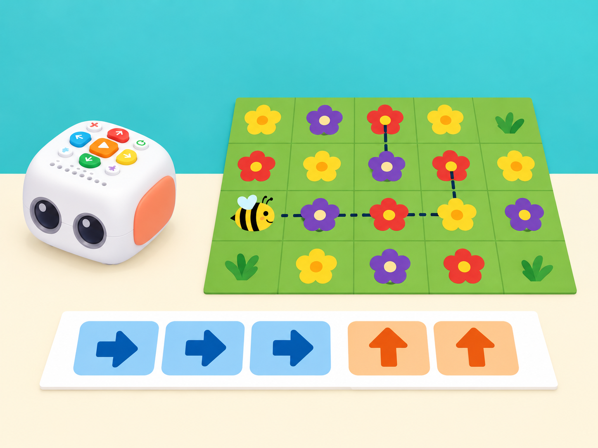
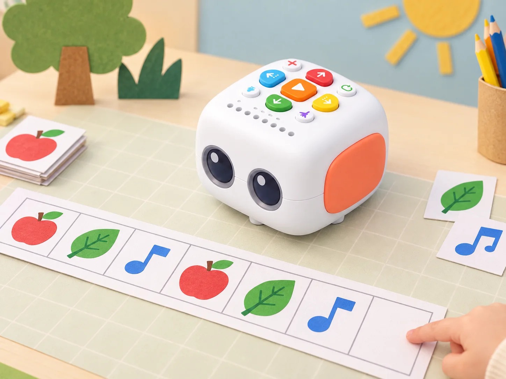
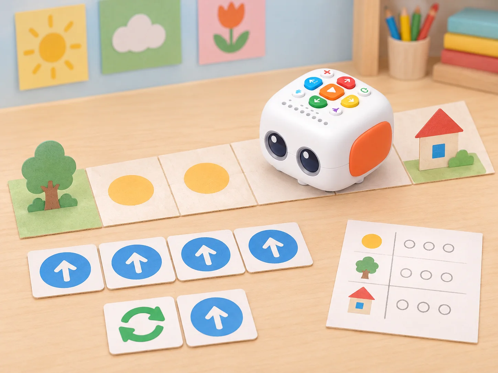
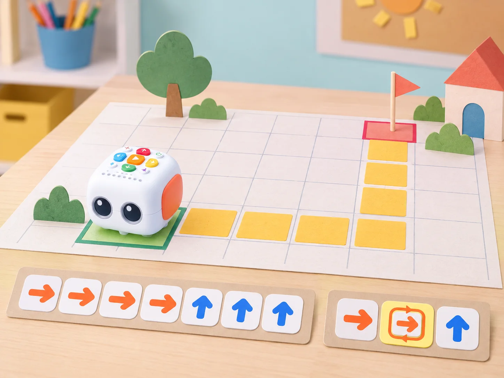
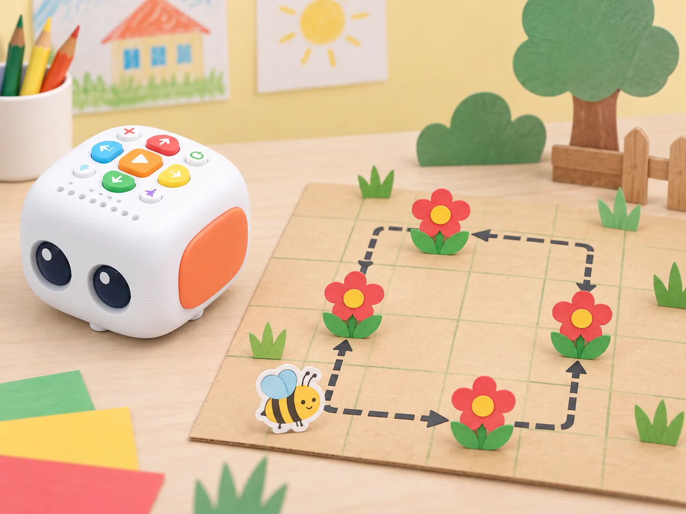
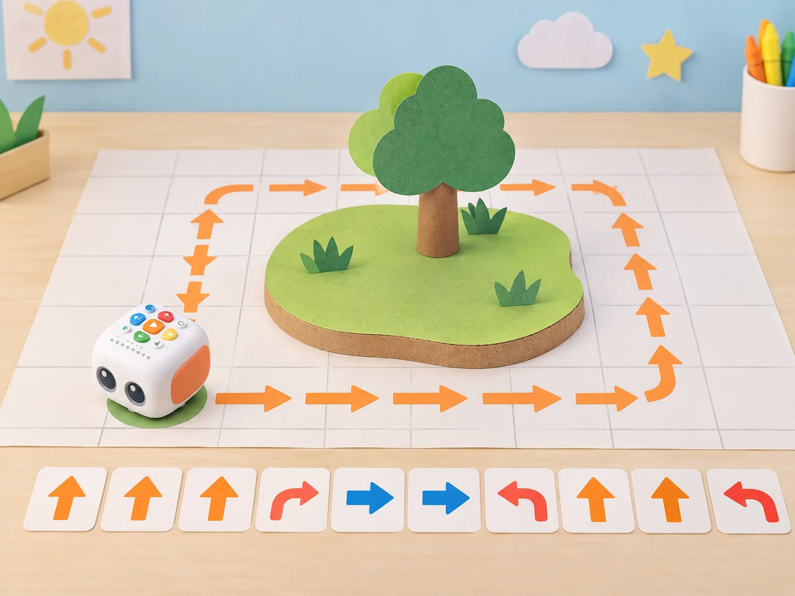
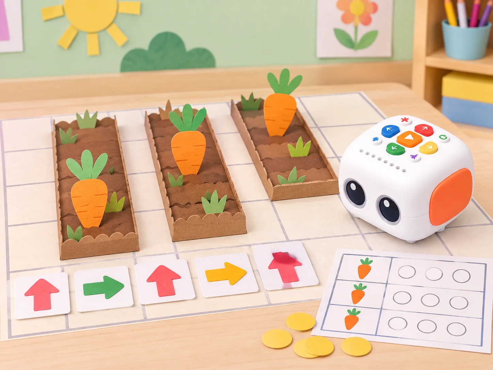
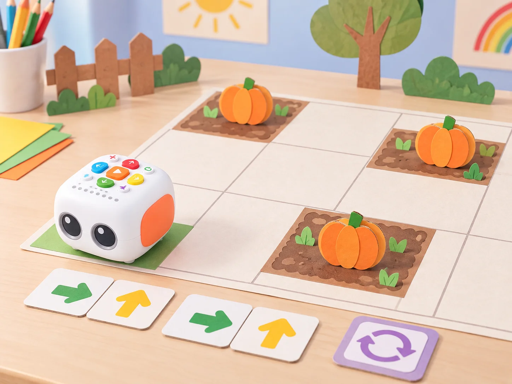

Patrons en ruta amb Tale-Bot
🏷️ Patrons i repetició
🌱 Situació, repte i intenció
alterneu qui construeix el patró i qui el comprova, amb opcions de resposta oral, visual o amb targetes. Abans de cada repte, carregueu Tale-Bot, comproveu la versió del robot i prepareu una taula o terra nets i plans. Els patrons i mapes són propis; useu adhesius OID o funcions de l’Activity Box només si el centre en disposa i els ha verificat.
🎯 Aprenentatges i vocabulari
- Identificar una unitat que es repeteix en un patró de moviments o símbols.
- Expressar una repetició amb ordres més breus sense perdre la seqüència prevista.
- Provar patrons diferents i detectar en quin punt deixa de coincidir el resultat.
- Crear una ruta rítmica o visual i explicar-ne la regla a una altra parella.
🧰 Materials i preparació
Tale-Bot, graella dibuixada pel centre, targetes de fletxes, peces planes i llapis de colors. No cal Activity Box: les targetes de joc i el mapa es poden confeccionar amb caselles pròpies. Comproveu el botó de repetició i les funcions de cada versió.
📅 Seqüència didàctica
Busca la unitat que torna
Fase 1 · Activem i prediem
Repartiu tires pròpies amb patrons de fruites, formes i sons del paisatge de l’horta. Predigueu quin element vindrà després d’una tira i expliqueu quina regla heu detectat.
Fase 2 · Explorem i construïm
Encerclau la unitat mínima que es repeteix i representeu la regla amb targetes, veu o moviment voluntari. Compteu quantes vegades apareix.

Fase 3 · Expliquem i registrem
Completeu una seqüència nova en què falta l’últim grup i registreu la unitat repetida i el recompte.
Fase 4 · Apliquem i millorem
Creeu una tira perquè una altra parella n’endevine la regla. Reviseu-la si admet diverses continuacions possibles que no havíeu previst.
Fase 5 · Comprovem i reflexionem
Una dansa amb repetició
Fase 1 · Activem i prediem
Prepareu cinc programes breus de dificultat creixent: acció única, canvi de direcció, parell d’accions, patró de dos passos repetit i seqüència amb pausa o dansa. Abans de cada intent, predigueu quins indicadors s’encendran i quantes repeticions hi haurà.
Fase 2 · Explorem i construïm
Introduïu els programes i anoteu els indicadors de codi i bucle que observeu. Comproveu quines funcions mostra realment el model de la dotació.

Fase 3 · Expliquem i registrem
En el cinqué repte, dissenyeu un patró de dos moviments i una pausa. Registreu-lo primer amb ordres repetides una per una.
Fase 4 · Apliquem i millorem
Introduïu el mateix patró amb el botó físic de repetició i compareu les dues execucions. Si la funció no està disponible o no és clara, representeu el bucle amb targetes i peces sobre paper.
Fase 5 · Comprovem i reflexionem
Comprimim i provem programes
Fase 1 · Activem i prediem
Prepareu cinc seqüències pròpies de fletxes amb una part repetida. Predigueu la posició final abans de comprimir el programa.
Fase 2 · Explorem i construïm
Marqueu la unitat repetida, compteu-ne les ocurrències i decidiu quantes vegades cal usar el comandament de repetició.

Fase 3 · Expliquem i registrem
Registreu la seqüència llarga, la unitat identificada, el nombre de repeticions i la posició final prevista.
Fase 4 · Apliquem i millorem
Reescriviu cada programa amb el botó físic i compareu recorregut i posició final amb la versió llarga. Si la dotació no ofereix el botó, feu la representació compacta amb targetes i indiqueu-ho.
Fase 5 · Comprovem i reflexionem
Una abella visita flors semblants
Fase 1 · Activem i prediem
Col·loqueu flors de paper del mateix color en una maqueta del jardí escolar. Predigueu quines ordres portarien Tale-Bot des de l’inici fins a totes les flors.
Fase 2 · Explorem i construïm
Dibuixeu una ruta que visite cada flor. La docent presenta una tira d’instruccions i el grup observa quins botons i indicadors s’activen.

Fase 3 · Expliquem i registrem
Marqueu la part repetida de la ruta i anoteu quantes vegades s’ha d’executar. Comproveu cada parada esperada al mapa.
Fase 4 · Apliquem i millorem
Introduïu les ordres i useu la funció repetir per crear una seqüència. Proveu-la des del mateix punt d’inici i reviseu la ruta si alguna flor queda sense visitar.
Fase 5 · Comprovem i reflexionem
Protegeix l’illa del jardí
Fase 1 · Activem i prediem
Poseu un objecte tou gran damunt d’una illa de cartó. Predigueu una ruta que el rodege sense tocar-lo i torne al punt de partida.
Fase 2 · Explorem i construïm
Traceu la ruta amb targetes i copieu les ordres en paper. Encerclau els trams iguals que podrien formar un bucle.

Fase 3 · Expliquem i registrem
Registreu el codi llarg, els trams repetits i l’orientació inicial. Indiqueu on ha de quedar el robot quan complete el recorregut.
Fase 4 · Apliquem i millorem
Reorganitzeu la seqüència amb el botó de repetició i executeu les dues versions des de la mateixa orientació. Si afegiu un segon objecte, predigueu primer quina part del programa haurà de canviar.
Fase 5 · Comprovem i reflexionem
Recorregut de carlotes de cartó
Fase 1 · Activem i prediem
Col·loqueu tres fitxes de carlota en un mapa de bancals inspirat en l’horta valenciana. Predigueu l’ordre de visita i el nombre d’ordres necessari.
Fase 2 · Explorem i construïm
Marqueu la ruta amb retolador rentable sobre el mapa o amb una tira de caselles. Codifiqueu el trajecte que visita les tres fitxes.

Fase 3 · Expliquem i registrem
Localitzeu les ordres repetides i registreu el codi llarg i el nombre de visites previst.
Fase 4 · Apliquem i millorem
Substituïu les ordres repetides pel botó físic de repetició. Abans de prémer Play, una altra persona comprova que la ruta curta visita els mateixos punts. Proveu-la amb el retolador només si el suport i el retolador originals són a la dotació; altrament, useu una fitxa de paper.
Fase 5 · Comprovem i reflexionem
Collim carabasses de paper
Fase 1 · Activem i prediem
Dissenyeu un repte final amb peces grans de carabassa i una ruta marcada. Incloeu com a mínim dos fragments repetits i predigueu la seqüència de visites.
Fase 2 · Explorem i construïm
Planifiqueu les ordres amb targetes i escriviu el programa llarg. Identifiqueu cada unitat repetida i el nombre de repeticions.

Fase 3 · Expliquem i registrem
Prepareu el mapa i la predicció per a un altre equip, sense donar-li el codi. Registreu la posició esperada després de cada fragment.
Fase 4 · Apliquem i millorem
Feu la versió compacta amb el botó de repetició i demaneu a l’altre equip que execute els dos codis. Si divergeixen, localitzeu el primer punt diferent i reviseu només el fragment corresponent.
Fase 5 · Comprovem i reflexionem
🧪 Evidències i avaluació
Patró marcat, seqüència llarga, versió compacta, nombre de repeticions i registre de prova. L’alumnat explica quan un bucle és més clar i quan pot amagar un error.
♿ Participació, accessibilitat i seguretat
Representem cada instrucció amb forma i símbol a més de color, i oferim una pauta de patró manipulable amb targetes. Qui no vulga conduir el robot pot predir, ordenar, observar o registrar el trajecte. Comenceu amb una ruta curta en superfície plana i afegiu ordres només quan l’equip puga explicar el patró.
🔗 Referents i adaptació
Adapta les set targetes C —Find the Patterns, Tireless Dancer, Capable Repeat Button, Hardworking Bees, Tale-Bot Guard II, Carrot Picking i Pumpkin Picking— de les Activity Cards oficials. Les rutes i cartes són originals i l’ús del bucle s’ajusta a les ordres realment disponibles.